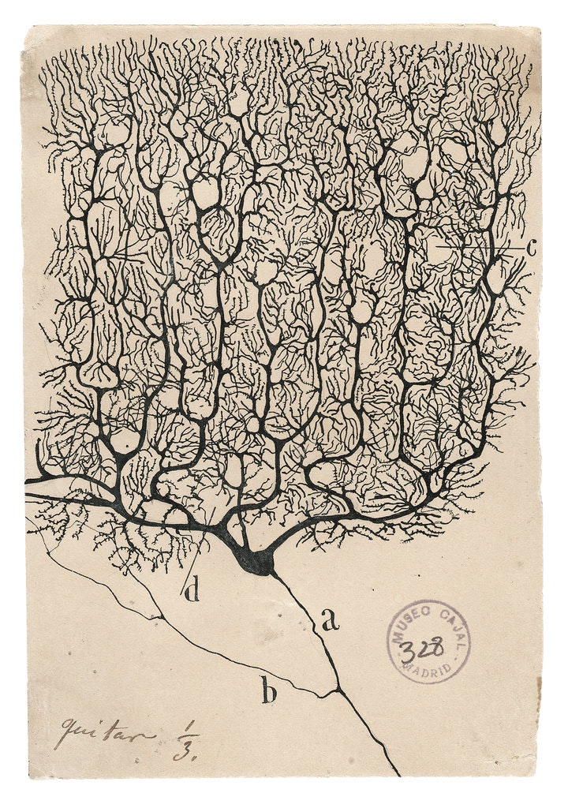
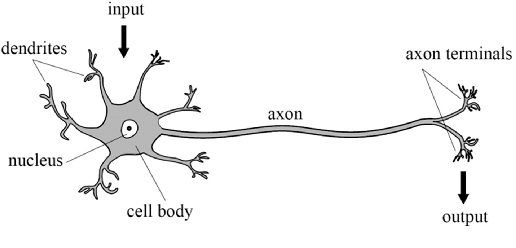
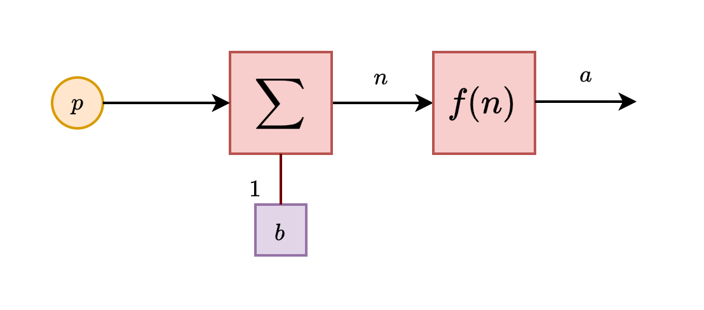
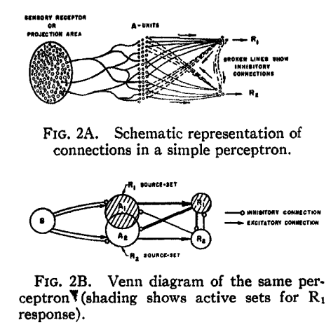
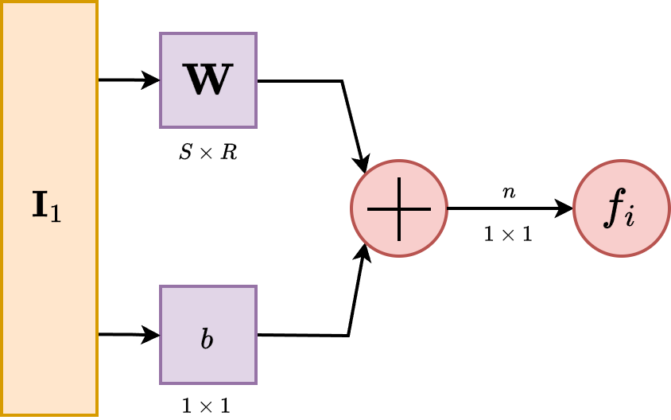

Preface
This book is an effort to modernize, and partially in a sense, formalize the knowledge of machine learning and neural network as a whole. As such, the goal is simply to create a knowledge base, and planning web of topics that will be of further uses in researches or projects further on. That is the main goal.
Member
There are two members Fujimiya Amane and Daud Shahbaz contributing to this page. So forth.
Introduction
This particular course of action, and hence this documentation, is inspired by Neural Network Design Hagan, 2014 and Dive into Deep Learning D2L, Zhang et al.. What does this mean is that we take inspiration from this? Partially because of the deep root foundation that NND touches upon - the old concept and historic evolution of neural network and its structures, and an attempt to discover, experiment, and furthermore dissect those structures, partially explaining why it is working like it is nowadays, and also transform those annoying MATLAB code into Python code on our own. The second one is to connect that, with a clear picture to modern landscape of model and connectionism theory of the past, and continue on with the historic evolution of the structure.
The task is harder to do than anything, so for now, it would be wise to be careful when treading this. For now, the plan is simple: we do a dual chapter style work, with one chapter comprises the theoretical and exploratory sections and sections of experimental setup to the problem laid out in that section alone. Which is fairly simple, so to speak. There are also experimental inquiries, insights, some experiments aside from that, and so on.
Well, for now, let's get to work. We have quite a lot to do.
A quick history on connectionism
Connectionism is the term coined toward the classical neural-based idea of artificial intelligence development. More so, the direct competitor against the theory of the time, coined, well, symbolism camp of thoughts. While its name right now is referred to neural network architecture system, or couples with learning action, called deep learning, the originality of this particular framework of constructing the thinking machine comes from the 1943 paper of McCulloch and Pitts.
In 1943, neurophysiologist (that's right, this job existed at the time) Warren McCulloch and logician Walter Pitts collaborated on a groundbreaking paper titled, "A Logical Calculus of the Ideas Immanent in Nervous Activity", published in the "Bulletin of Mathematical Biophysics." [Unknown bib ref: mcculloch_logical_1943.] The central aim of their work was to investigate the possibility of representing logical functions through the conception of what is then called the first formulation of an artificial neuron, which is fairly common in the neurophysiological field of the time, in which they adopted a model of simplified neuron structure. The details of the paper are pretty much, well, complex to have a look at, because it is aimed toward logical representation, which at the time, they chose to represent them in a fairly convoluted, difficult notational scheme. I mean, seriously, using symbolism of Language II (Carnap, 1938), Russell and Whitehead Principia (1927) and else is fairly not so nice for the reader, though arguably it is used for correctness. Though, we can still try decrypting the paper as it is. Actually, no, because it is pretty cumbersome.
One of the direct, and not so flair giving consequence of such paper, is Rosenblatt's work on the artificial neural network idea in the 1950s [Rosenblatt1958ThePA], which is referred to a parallel computing machine and organization framework of processes in the brain. Unfortunately, the idea is not fully utilized and realized, much to the time's limitation and architectural understanding.
And as for the very typical and well-known story of [10.5555/50066] Perceptron book, the field is ultimately halted to a complete stop, much to the distaste of those who do not favour the rigid foundation of symbolic AI, and to the disdain of those who still believe in mimicking neuron to work. Even if the potential was misunderstood, such is to say there exists the framework of not just a singular neuron like Minsky said, but a multilayer perceptron, the damage is already done.
For the latter part, I wish to say I would not have to tell you the story. Since it is already written, and everyone knows about the now-famous path of neural network (go ask ChatGPT, which is, a neural network model).
The biological neuron
Enough of the flair. Let us get back to work. Previously we said that connectionism aims to simulate the structure of biological neuron in the brain, using the same function as it is. So, how is it, and what is the model of the biological neuron that we have?
From complex to simple model
Historically, the working mechanism and what we observe of the structure of neurons are fairly complex. The grandfather of neuroscience, Santiago Ramón y Cajal, and his 'opponent', Camillo Golgi, made substantial evidences and drawings of the complex web of neurons during the period.


Figure 1: Side-by-side illustration made by both Santiago Ramón y Cajal (1990) and Camillo Golgi (1885).
Informally, the brain encased the 'brain' - the nervous system in which defines its operation. This includes the central nervous system (CNS), and the peripheral nervous system (PNS). This is generally the conventional separation of the nervous system, as CNS includes the brain and spinal cord, while the peripheral nervous system consists of everything else. The CNS's responsibilities include receiving, processing, and responding to sensory information, while the peripheral, as its name, is similar to control relay and sensory influences.
The brain is divided into two hemispheres (The reason is unknown for now, in terms of operational and evolutional accord), mainly for regional specialization. Between the two central hemispheres, they are connected by nerve bundles, in this case, is the thick band of fibres known as corpus callosum, consisting of about 200 million axons. The axons or nerve fibre is the long, slender projection of a nerve cell, or neuron, to different neurons and areas. So, think of it like a more extension cables from the transformer and generator.
The direction between the 2 hemispherical connection is unknown, and can be either one-way, or two-way. But generally, we might want to take it as two-way, since it makes sense for when simultaneous tasks which requires multiple system on both sides to operates, remains so. Or rather, we can take it as the idea of neural vacancy path, that is, empty pathway that is one-directional specific in usage cases. More so like a conditional diode, depends on which way it was triggered first. But rather, it helps us to classify between the communication directive subjects, and processing directive subject of the brain.
The brain consists of a large number (approximately ) of highly connected neurons. For our purpose, we simplify them to mostly three principal components, beside its life support: the dendrites, the cell body and the axon. The dendrites are tree-like receptive networks of nerve fibres that carry electrical signals into the cell body. The cell model effectively sums and thresholds these incoming signals. The axon is simply, as we have said, the cord connecting other neurons to it. The point of contact between an axon of one cell and a dendrite of another cell is then called a synapse. It is the arrangement of neurons and the strengths of individual synapses, determined by a complex chemical process, that establishes the function of the biological neural network - though even by then, it is a gross simplification of the actual process - mostly based on empirical evidences.
Aside from neuron, of the cellular neurology point of view, there exists also the glia, or neuroglia for the full name, which serves as the supporting cells for the operation of the main neurons' system. Specifically, the neuroglia should be emphasized to be rather inert - it does not align, or rather, can be classified as an operating unit in the brain, with respect to the well-known electrically excitable process that its brother neuron possesses. Indeed, because of such, there are many definitions in which neuroglia can take from, most of which are rather diluting, hence hitherto there are no agreed upon definition. In the above statement, we note that neuroglia as the supportive cells of neurons, but many exists to classify it by their process branching and delicate morphology, or, as mentioned, electrically inert components. As a result, 'neuroglia' has been come the generalized term that covers cells with different origins, morphology, physiological properties and functional specialization aside from the nervous cells of the brain. Such can be said of the uncertain analysis of neuroglia to the operation process and the long, complex chain of thoughts and functioning scheme of the host that it resides in, for whether the neuroglia participate in any incumbent roles throughout its working space. This is perhaps one of the issues with neuroglia researches, though it is not to say many attempts has been made trying to understand it, but rather the underrated position of the neuroglia to the other part of the brain itself. So, this much remains as a mystery.
By itself, the brain's neuron and its neural structure is insanely complex. By time and birth, some of the neural structure is defined at birth. We don't know if this is encoded into itself by genes, but most likely so from biological evolutions itself. Other parts are developed through the dynamic action, often interpreted as learning (which is why we have the theory of learning), as new connections are made and others waste away. This development is most noticeable in the early stages of life. This is present in almost all developed neural structure of any given brain of any species. For example, it has been shown that if a young cat is denied use of one eye during a critical window of time, it will never develop normal vision in that eye. Linguists also have discovered that infants over six months of age can no longer discriminate certain speech sounds, unless they were exposed to them earlier in their life [WERKER198449] . Somehow, it is also pretty vindictive to believe that the brain and all other functional components have a certain development timeframe deeply encoded in its biological encoding itself. Behaviourally, we can also interject that without pressure (like the fact that the cat must see, and must walk, so that it must move its legs and eyes), many functions would cease to be available.
More of those illustrations can be found in here, here, here, and some public repository holding such. Nevertheless, to prove such point, the structure and working of biological neurons constitute one of the most, if not seriously the most complex machine-type organism ever observed. If, one wish to develop or understand it, without having to remap the entire brain, one must be brave and better. To simplify the neuron, we adopt the simple construction with the most important parts being the axon, the body, and the dendrite. Symbolically, it is the schema, as the following indicate.

This is the very run-down, simplistic view of a neuron, stripped down to its operational compartments and none of other flairs in between, which might as well create certainly a complex system of analysis. Nevertheless, we should not abandon such endeavour ourselves, because by virtue of anything and of the scientific method, reduction of complex model to simple one is imperative to understand, for else the flair of messiness in practice will overshadow what lies underneath. We have the input, coming in via the dendrites, into the main processing body of the cell, then transmitted to the axon to go out as the output. This fits with a type of model in mathematics, called input-output model, and such interpretation upon the machining of neuron would be used throughout the book. Our task is then to devise, certainly, a way to implement this into a computer functional.
Basic neuron schema
The neuron model is fairly simple. We develop it, much to the fortunate simplified model of neuron, into specific units, which is now then called simply as neuron. We will also illustrate the main building blocks, its functions and operation of ranges, and organization protocol possible of such 'neural networks'. More complex architecture introduced after this section will still base on this chapter for its basic operational modules.
Single-input neuron
A single-input neuron receives only one input channel, and hence outputs only one. Suppose that we have the input into the neuron, then the input itself is controlled by the receiver of the neuron by a linear modifier, . The here is called the bias, which shift the signal/value in, while the is the weight, which control the relative strength of the input. We assume here that the numerical encoding and operation is on the field .
This input after processing would then be fed into a function, usually called in literature as activation function, transfer function, and so on. Its role is, either simply introducing nonlinear behaviours, or, to gauge and create certain interpretation of the data for the specific neuron. What we mean by this will be clarified in further sections. Hence, the full inner working of the model can be seen as for an arbitrary function , since we restrict it to singular input. Below is the illustration of such neuron unit.

So in total, the output of this neuron is . The actual output depends on the particular transfer function that is chosen for it. So far, it is the only rigid part of the entire neuron. Hence, we also call this type a static neuron, especially when the interpreter of the neuron input is fixed - usually the designer will tailor it to specific purpose. Some transfer function will work better than others in specific cases, and so on. Activation function hence can contain or take advantage of, for numerical encoding, specific geometric properties for example of the observable landscape, and so on.
Transfer function
Now, let us discuss more about the transfer function. So far, this is the most important aspect of a typical neuron. Here, the transfer function can be linear or nonlinear function, in which it is used to transform the input-output characteristic of a single-input neuron into the variety of the transfer function.
Hard limit ()
The hard limit transfer function, used in distinctive categorical sorting, has its input-output characteristic as:
If we allow modification of the inhibitory value, that is, the zero, by putting it to another variable , the function turns into the dynamic hard limit function,
Actually, you can even give the function the value range of absolute jump to be more than , though fundamentally, according to the logical design, it is not interpretable to anything substantial.
Symmetric hard limit ()
This one is a variation of , in which the discrete binary channel is instead. Hard limit is more fitting for probability of logic setting, while symmetric hard limit is more favourable in certain specification, for example, for fuzzy logical domain or directed value functions. Coincidentally, this is also the range that certain sigmoidal variation takes place. Symmetric hard limit is then defined by
Linear family ()
There are many ways to structure the linear input-output processing node. Usually, we will have the pure linear channel , the saturating linear channel , and the symmetric variation of the saturating linear channel \texttt{satlins}. Because they belong to the same family. The linear one is simple. For saturating linear, we have its signal inhibited toward the two ends: A generalization of this is taken in the form of a functional enclosed within this range. That is, which might lead to undesired behaviours or simply non-continuous values, but we will have to resolve that later on. If ever. And finally, the symmetric version of the saturating linear functional,
which will also have the same generalized form.
Sigmoid () and log-sigmoid ()
The sigmoid function is fairly simple. Instead of giving piecewise saturating condition, we find the expression that gives pairwise, two-sided continuously saturated function, expressed by:
A fairly complicated and often reductive version of it is the log-sigmoid function, as Interestingly, the differentiation operator on log-sigmoid gives the sigmoid function, while sigmoid's differentiation gives .
Hyperbolic tangent ()
The hyperbolic tangent the adoption of the hyperbolic function to be transfer function. As such, its range also lies in , making it on par with variations of symmetric saturation function. Normally, we would regard this as the somewhat narrow (by width) symmetric version of sigmoid. It is formulated as: Also interestingly, hyperbolic tangent is self-referential, evidentual of the derivative: The uses of those function can be interpreted to be quite similar to how we can formulate the binary classification, or binary categorization problem-solving solution.
Activation function is one of the most important part of a particular neuron. While if we fix the procesing input unit, activation function grants us the ability to encode particular interpretation that the neuron would have to operate upon - for example, the sigmoidal mode is actively and practically a polar binary comparison - supposedly in range , and the curve is also bimodal. Hence, designing network around such is one of the very important aspect of the neuron structure. Though, what would happen if you let a lot of neurons working in place?
Network expansion
Now, let us consider the next evolution of the previous model of neuron structure. Previously, we have extended to multiple-input neuron, and now our neuron can effectively handle a lot of input data, which makes the encoding space of it larger than ever. However, when we construct it like that, we soon find a major roadblock - the blockage of processing.
While it is true that we have been able to process huge chunk of data, as there exists no hard limit on how many input can one simply get from, at least when the transformation is applied, hence is a possible scenario, the processing structure is limited. Indeed, we have only extended the neuron in the input side, of which we still rely on one singular interpreter, the transfer function block. With this come a major problem. Mathematically, any given considered of a functional expression can only work out a subspace cut or relation on the operating space. This is, by default the consequence of using function and function expression. Basically, the range of operation that you have is limited, and by said function in the transformation, you are only allowed to simulate a singular mapping relation on the operating space. With , this increase losing information, problems with processing huge chunk, and so on. Indeed, the operational capacity is limited so much, that [10.5555/50066] argued concretely that a singular multiple-input neuron will not be able to solve a wide range of problems. What can be done to resolve this issue?
There are many ways to resolve this issue, indeed, but one of it remains until this very day. It is by organizing into layers, as seen in the concept of a multilayer perceptron [Rosenblatt1958ThePA] . Multilayer perceptron embodies the notion of parallel computing, of which comprised inputs and processes from multiple neurons into a net of responses. In Rosenblatt case, the paper used the setup of and systems.

Let us then proceed with the content. A single-layer network consists of neurons, where each of the inputs is connected to each of the neurons. We call this type of connection as fully-connected, or totally dense connections.

The layer, in its operational form, includes the weight matrix, the summer, the bias vector , the transfer function in general, and the output vector . In the abbreviated notation, components of the same form are compressed to one, but each neuron has its own singular component handling such operations. Some authors refer to inputs as not a layer but just simply input ambient space, some refers to the inning layer as hidden layer and the begin-end layers as transparent, but we will refrain from such lexical argument of such.
Each element of the input vector is connected to each neuron through the weight matrix . Each neuron then has a bias, , a summer, a transfer function and an output . Taken together and in parallel, the outputs form the output vector . It is also common for , and sometimes the dimension can be infinitely many. The advantage of fully-connected notion is then realized, as for the evenness of connections between them.
While we said that the abbreviated notation compress similar structure together in a form, there exists a question about will we have to only use one transfer function for all neurons in such layer. The answer is no, but also yes. Typically, one might want to use multiple transfer function. However, in such case, it retains the fact that each of those neurons above are independent of each other, and hence can be considered, in such case, a different 'sublayer' inside the layer itself. So, it is possible. However, modern day architectural design favours uniformity, as for computational optimization and so on, and usually, you will only see difference in transfer function on the layer scale, not per-neuron scale.
The input vector elements enter the network through the weight matrix which is as
\[ \mathbf{W} = \begin{bmatrix} w_{11} & w_{12} & \dots & w_{1R} \\ w_{21} & w_{22} & \dots & w_{2R} \\ \vdots & \vdots & \ddots & \vdots \\ w_{S1} & w_{S2} & \dots & w_{SR} \end{bmatrix} \]
The row indices of the elements of matrix indicate destination neuron associated with the weight, while column indicates the source of the input for that weight.
Multiple layers
As for now, we can then finally stack them together. Because of the configuration assumed by the structure layer itself, you can only stack it forward - partially why we call it feed-forward network as it is so. Consider a network with several layers. Each of those layers now have their own weight matrix , its own bias vector , net input vector and output vector . The notation is not shifted, components of such representation are still using the subscript, while layer-wise, we are using the superscript. Hence, will be a typical notation for connections on neuron of layer .

A layer whose output is the network output is called the output layer. The other layers beside the input stream are called hidden layer. This term comes from the interpretation of a black box model, typically where only the input and output of a system matters. Multilayer networks are hence, as we said, a way to make it more powerful than both single layer network and single multiple input neurons. Indeed, there exists the universal approximation theorem, which can be stated of such.
Theorem 1 (Universal Approximation Theorem). We state that, for any continuous function on real field, for any , there exists a neural network with a single hidden layer, such that for all .
Essentially, this theorem states that neural networks can approximate continuous functions to any desired degree of accuracy. It is to note, that even though it is said of such, fundamentally, there is no way to gauge, by UAT alone, when and how to reach such approximation. The proof is very elaborated, and contains many variations. As such, we would reserve this to a more suitable section.
At this point, the number of choices to be made in specifying a network may look overwhelming, so let us consider such. Because we work on the basis of a black box model, we determine the problem setting solely by the desired input and output of the problem itself. If there are to be output, then at the end there must be output neuron in accordance. If the problem is specified with inputs, we also have to put inputs there. The desired output shape and distribution shall also be used accordingly. This is particularly easy, since by the order of construction, we have an interchangeable transfer function at the end of any particular neural layer. Hence, if, for example, it is a problem of probabilistic gauging, then sigmoid can be used with represents probability. Thus, it is fairly easy, per specification required, to change the neural network per wills. The only hard thing is to gauge the hidden structure. By far, this is one of the many problems encountered of both machine learning and neural network design. What is the optimal or safe neural network structure hidden in-between input-output layer that specifies and do well on particular problem class? We have some ideas, but nothing conclusive. Even with UAT, it is fairly difficult to tell exactly what constitute such, and additionally, per [nakkiran_deep_2019] , [belkin_reconciling_2019] , it is even more not so apparent what is the solution for this problem. For references to deep learning book, use [goodfellow2016deep] as a concrete reference.